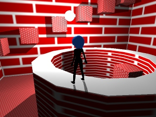

サンプルプログラム ３Ｄアクション基本＋深度値を利用した影表現、ポイントライト編 ( 要プログラマブルシェーダー３．０ )

「９．３Ｄアクション基本＋深度値を利用した影表現基本」の影表現は基本的に１方向からの光にしか対応できないので、
ポイントライトのような全方位に光の影ができるようなものには対応できません。
その対策として複数の深度値画像を使用した全方位への影表現があります。
手順としては、全方向の深度値を採集するために影描画用の描画可能画像を６つ用意して、
その６つの描画可能画像に対してそれぞれライトの正面方向、背面方向、上方向、下方向、左方向、
右方向を見たときのカメラ設定をした上で深度描画用のシェーダーを使用してステージモデル＋キャラクターモデルを描画します。
次にカメラを本来のカメラの設定に戻した後、用意した６つの影描画用画像を使用して
「９．３Ｄアクション基本＋深度値を利用した影表現基本」と同じ要領で影処理を行います。
が、このとき描画する座標が用意した６つの影描画用画像のどこに映っているのかを判断する必要があります。
今回のサンプルでは何の工夫も無く６つの影描画用画像ひとつひとつに対して映っているかどうかを判定して、
映っていたらその影描画用画像の深度値を適用するという方法を採っています。
プログラムの実行に必要なファイルのセットはこちらにあります。
Ｃ＋＋のプログラム
深度記録画像への描画用の剛体メッシュ用頂点シェーダーのプログラム
深度記録画像への描画用のスキニングメッシュ用頂点シェーダーのプログラム
深度記録画像への描画用のピクセルシェーダーのプログラム
深度記録画像を使ったポイントライト一つ付きの剛体メッシュ描画用頂点シェーダーのプログラム
深度記録画像を使ったポイントライト一つ付きのスキニングメッシュ描画用頂点シェーダーのプログラム
深度記録画像を使ったポイントライト一つ付きの描画用ピクセルシェーダーのプログラム
戻る